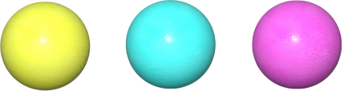
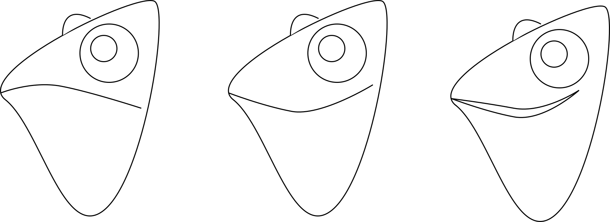
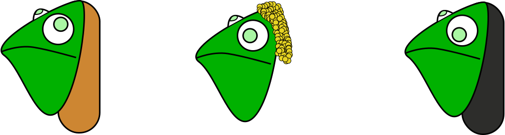
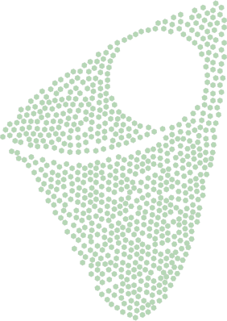
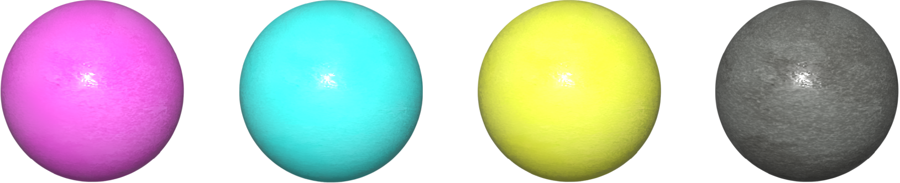

RUNWAY CHAMELEON
This project spins around developing a character for a fake game. I chose to create Caroline, a chameleon who wants to become a model.


The rules were simple: colorful gems will fall from the sky. Click on 5 of them to change Caroline's dress.
But don't click on the dark gems or you'll make her cry. She hates untrendy clothing.


In the early days, Caroline the chameleon looked very different.
As the days passed, not only her expressions became exaggerated. She herself became a 3d character.
Extra elements

